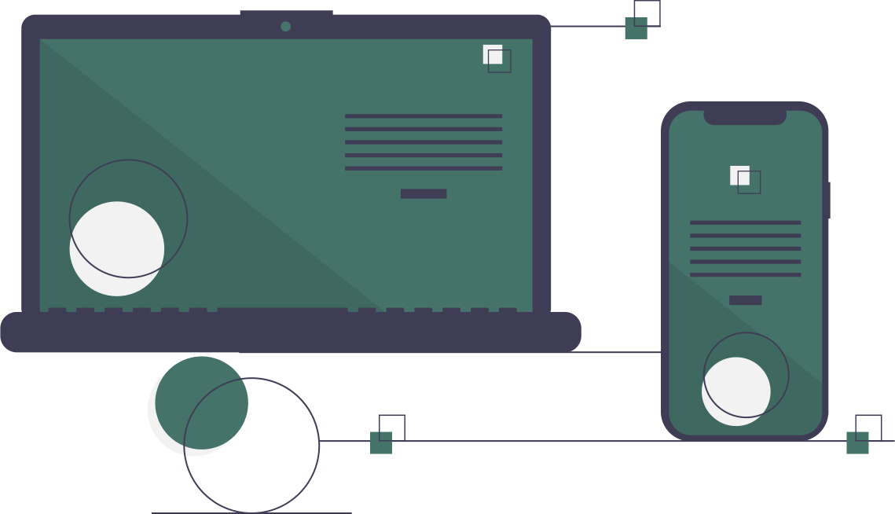

Um pouco sobre a gente...
A equipe da Solidarize tem o prazer de apresentar-lhes uma breve visão sobre nossa organização. Com o intuito de oferecer clareza e transparência, específicando a seguir informações que consideramos relevantes para nossos usuários.

Daniel Haddad

Guilherme do Carmo

Isabelly Buge

Maria Arnhold
Nossa Missão
Dado que o Espírito Santo abriga uma comunidade composta por mais de 18 mil Organizações Não Governamentais registradas, surgiu a necessidade de desenvolver uma plataforma que reúna todas essas instituições, as quais já se encontram cadastradas em nosso aplicativo. Tal iniciativa visa proporcionar praticidade e eficiência na localização dessas informações.
Nosso App
Nosso site oferece uma plataforma completa, permitindo o cadastro tanto de voluntários quanto de ONGs. Como voluntário você pode pesquisar por instituições de forma segura e rápida. Já as organizações cadastradas têm a oportunidade de recrutar novos voluntários por meio de uma página dedicada exclusivamente a elas. Experimente agora a Solidarize!
